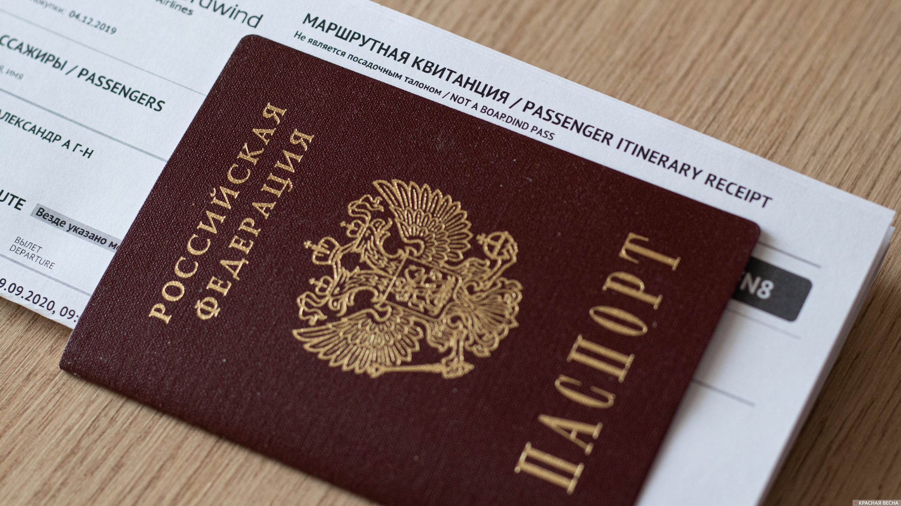

Актуальные цены на 2026 год
Мы предлагаем полный комплекс услуг по оформлению национальных виз. Наша команда ежедневно отслеживает изменения в требованиях консульств, чтобы гарантировать максимальную вероятность одобрения вашей заявки.
| Тип визы и страна | Срок оформления | Стоимость |
|---|---|---|
| Шенген (Франция, Италия, Испания) | 10-14 рабочих дней | 5 500 рублей |
| Азия (Китай, Индия, Вьетнам) | 3-5 рабочих дней | 4 000 рублей |
| США и Великобритания | от 20 рабочих дней | 12 000 рублей |
| Срочная подача (Любые направления) | 1-2 рабочих дня | 15 000 рублей |

Что включено в стоимость нашей работы?
- Подробный аудит вашей визовой истории и оценка шансов;
- Формирование индивидуального списка необходимых документов именно под вашу ситуацию;
- Заполнение сложных официальных электронных анкет на иностранном языке без ошибок;
- Выкуп или бронирование авиабилетов и отелей, полностью соответствующих требованиям консульств;
- Запись на подачу биометрических данных в оптимальные и самые ранние слоты.
Этапы нашего взаимодействия
Шаг 1: Первичная консультация. Мы разбираем вашу цель поездки и проверяем наличие базовых документов.
Шаг 2: Заключение договора. Фиксируем финальную стоимость и сроки, которые не изменятся в процессе работы.
Шаг 3: Подготовка кейса. Наши специалисты переводят справки, заполняют анкеты и подготавливают идеальное досье.
Шаг 4: Подача и получение. Вы сдаете биометрию (при необходимости) и забираете готовый паспорт с визой.
© 2026 Визовый Эксперт — Профессиональная помощь в оформлении документов